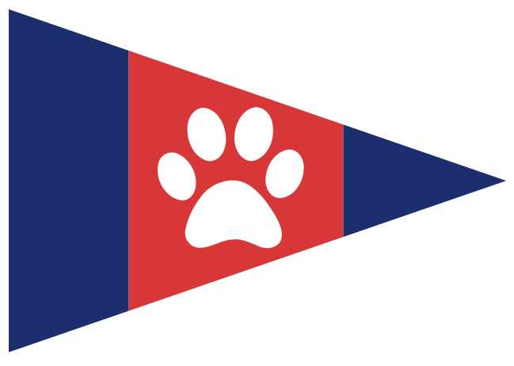

Salty Critter
Yacht Club
Controls
Steering & Sails
- Steer Arrow Left / Right
- Steer (Alt) A / D
- Fine Steering Shift + Steer
- Spinnaker Space
- Trim Mode Tab
- Sheet In/Out Arrow Down / Up
- Sheet In/Out (Alt) S / W
View & System
- Camera Mode Enter
- Toggle Nav Aids ` (Backtick)
- Pause Game Esc
- Screenshot F1
- Help ?
Paused
Press ESC to Resume